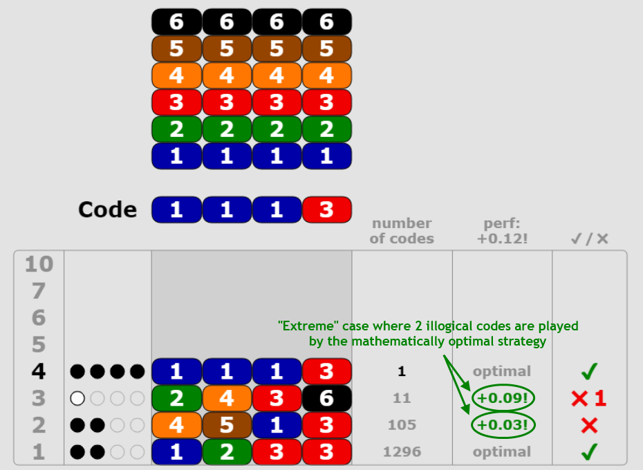
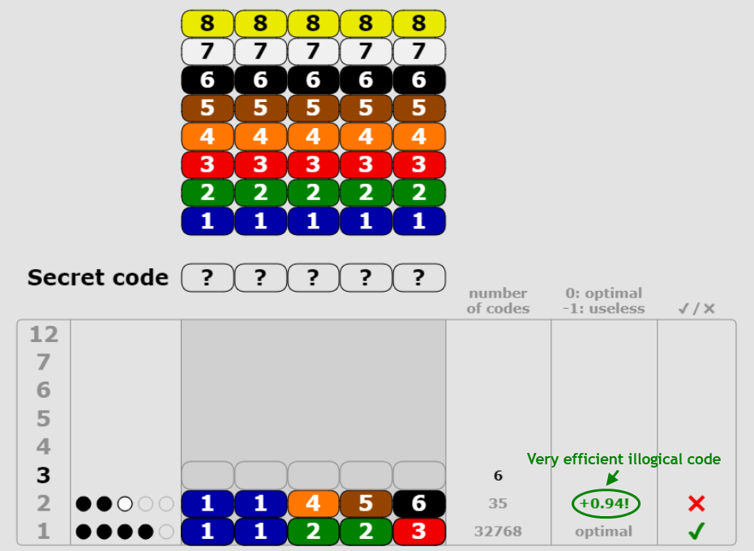

Optimal strategy
This page gives information on the optimal strategy of Super Master Mind, Master Mind and other code breaker games, and tricks to play optimally.
Very easy game (3 columns, 5 colors)
| First code |
Average number of attempts to find secret codes |
Δ |
| 123 |
3.640 (455) |
0.00 |
| 122 |
3.648 (456) |
-0.01 |
| 111 |
4.112 (514) |
-0.47 |
For very easy games (3 columns, 5 colors, 5
3 =
125 codes,
optimal logical strategy applied),
the optimal code to play at first attempt is 123 (or any other equivalent code with 3 different colors) with an average number of attempts to find secret codes of
455⁄53 = 3.640 and a maximal number of attempts of
5.
Master Mind (4 columns, 6 colors)
| First code |
Average number of attempts to find secret codes |
Δ |
| 1233 |
4.367 (5660) |
0.00 |
| 1234 |
4.431 (5743) |
-0.06 |
| 1122 |
4.438 (5752) |
-0.07 |
| 1222 |
4.512 (5848) |
-0.15 |
| 1111 |
4.907 (6359) |
-0.54 |
For Master Mind games (4 columns, 6 colors, 6
4 =
1296 codes,
optimal logical strategy applied),
the optimal code to play at first attempt is 1233 (or any other equivalent code with 1 double + 2 different colors) with an average number of attempts to find secret codes of
5660⁄64 ≈ 4.367 and a maximal number of attempts of
6.
About mathematically optimal strategies:
This average number of attempts is slightly higher than the number reached by the Koyama and Lai's mathematically optimal strategy which allows playing illogical codes at each stage of the game (
5625⁄64 ≈ 4.340, up to
6 attempts,
1233 as first attempt).
The option of playing illogical codes, in addition to logical codes, indeed brings more flexibility which results in benefits in some situations. It is illustrated in the below example:
click to enlarge
With a mathematically optimal strategy like Koyama and Lai's, between 0 and 2 illogical codes are played at the second and/or third attempts of the 6
4 games (0 being by far the most common case, then coinciding with the
optimal logical strategy). Here is an example showing how such a mathematically optimal strategy behaves in an "extreme" case where 2 illogical codes are played (without those 2 illogical codes, the mathematically optimal
5625⁄
64 performance is not reached):
click to enlarge
Super Master Mind (5 columns, 8 colors)
| First code |
Average number of attempts to find secret codes |
Δ |
Equivalent first codes |
| 12233 |
5.491 (179929) |
0.00 |
5040⁄85 ≈ 15% |
| 12344 |
5.495 (180053) |
0.00 |
16800⁄85 ≈ 51% |
| 12345 |
5.537 (181434) |
-0.05 |
6720⁄85 ≈ 21% |
| 12333 |
5.539 (181505) |
-0.05 |
3360⁄85 ≈ 10% |
| 11222 |
5.593 (183280) |
-0.10 |
560⁄85 ≈ 1.7% |
| 12222 |
5.704 (186905) |
-0.21 |
280⁄85 ≈ 0.85% |
| 11111 |
6.086 (199427) |
-0.60 |
8⁄85 ≈ 0.024% |
For Super Master Mind games (5 columns, 8 colors, 8
5 =
32768 codes,
optimal logical strategy applied),
the optimal code to play at first attempt is 12233 (or any other equivalent code with 2 doubles + 1 different color) with an average number of attempts to find secret codes of
179929⁄85 ≈ 5.491 and a maximal number of attempts of
8.
It is very close to the average number of attempts of
12344 (or any other equivalent code with 1 double + 3 different colors) as first attempt:
180053⁄85 ≈ 5.495. In the online game, as their difference is < 0.005, both 12233 and 12344 will be indicated as "optimal" first codes, even if only 12233 is actually (optimality indication with ±0.005 precision to simplify).
About mathematically optimal strategies:
Processing times to evaluate them are out of reach. With
illogical codes allowed at second attempt (with obviously impossible colors forbidden to simplify, i.e. colors present in first code with a "0 black + 0 white peg" mark)
and then the optimal logical strategy applied from third attempt, the best 3 codes to play at first attempt become:
- 12344 with an average number of attempts to find secret codes of 179274⁄85 ≈ 5.471
- 12233 with an average number of attempts to find secret codes of 179330⁄85 ≈ 5.473
- 12345 with an average number of attempts to find secret codes of 180441⁄85 ≈ 5.507
That implies mathematically optimal strategies to have an optimal performance lower than 5.471, likely close to
5.46, with 12344 or 12233 as optimal first code. Indeed we observed for Master Mind games that gains brought by illogical codes at second attempt (5660-5636 = 24) were around twice the ones brought at third attempt (5636-5625 = 11), which could lead to 5.471-(5.491-5.471)/2 ≈ 5.46 when transposed to Super Master Mind games.
Strategy performances & tricks to play optimally
- With a mathematically optimal strategy (like Koyama and Lai's for Master Mind games), Δ values (i.e. performances of codes played relative to the performance of optimal code(s)) are always in the range [-1;0]. That rule applies whichever numbers of columns and colors.
- With the optimal logical strategy, when you play codes, Δ values are in a wider range [X;Y] with X<-1 and Y>0 (Y=0 only if the codes played are logical). For example, some observed values for Super Master Mind games are:
- Δ = -1.35 for an illogical code which reduces the number of possible codes but makes the rest of the game harder to solve, which at the end makes it even worse than a totally useless code which would not have modified the number of possible codes (Δ = -1),
- Δ = +0.94 for a very efficient illogical code, in a typical situation where some colors are known and distinguishing the remaining colors is more efficient to do by playing (half of them in) an illogical code:
click to enlarge
-
With the same logic, getting Δ > 0 values is also possible at game end, when there remain few strongly correlated possible codes, for example:
- if there remain 5 possible codes {12344, 12345, 12346, 12347, 12348}, then playing 12356, which is illogical, leads to Δ = +0.40:
Δ = (1+2+3+4+5)⁄5 - (2+2+2+3+4)⁄5 = 0.40
- if there remain 4 possible codes {12345, 12346, 12347, 12348}, then playing 12356, which is illogical, leads to Δ = +0.25:
Δ = (1+2+3+4)⁄4 - (2+2+2+3)⁄4 = 0.25
You can try to apply those tricks in the online game!
Other games
For games with more columns or colors than Super Master Mind, compromises shall also be found between playing different and duplicate colors. Here are some results helping to understand which are the best codes to play at first attempts:
- Mega Master Mind (6 columns, 9 colors):
The optimal logical strategy was not evaluated due to very long processing times (evaluation may last one year or so on a poweful laptop). The best code to play at first attempt is presumably among:
- 112233 (or any other equivalent code with 3 doubles) with a maximum number of possible codes at second attempt of 93312 (lowest value among all first codes, which can be a good criterion even if approximate)
- 123455 (or any other equivalent code with 1 double + 4 different colors) with a maximum number of possible codes at second attempt of 96900 (second lowest value)
- 123344 (or any other equivalent code with 2 doubles + 2 different colors) with a maximum number of possible codes at second attempt of 100465 (third lowest value, all others being ≥ 108618)
- Ultra Master Mind (7 columns, 10 colors):
The optimal logical strategy was not evaluated due to extremely long processing times. The best code to play at first attempt is presumably among:
- 1234455 (or any other equivalent code with 2 doubles + 3 different colors) with a maximum number of possible codes at second attempt of 1598841 (lowest value among all first codes, which can be a good criterion even if approximate)
- 1122333 (or any other equivalent code with 2 doubles + 1 triple) with a maximum number of possible codes at second attempt of 1647086 (second lowest value)
- 1223344 (or any other equivalent code with 3 doubles + 1 different color) with a maximum number of possible codes at second attempt of 1651935 (third lowest value, all others being ≥ 1721636)
{kind=link}
{kind=link}
{kind=link}